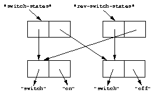

11.4.2 Destructive operations and shared structure
Consider the following example, and Figures 11.4 and 11.5.
// Firste we construct a vector of two vectors
? define variable *switch-states*
= vector(vector("switch", "on"), vector("switch", "off"));
? *switch-states*;
#[#["switch", "on"], #["switch", "off"]]
// Now, we reverse the vector, holding on to the result
? define variable *rev-switch-states* = my-reverse(*switch-states*);
At this point, the states of the variables and vectors correspond to Figure 11.4.
We examine the two sequences:
? *rev-switch-states*; #[#["switch", "off"], #["switch", "on"]] // Although *switch-states* and *rev-switch-states* are different vectors, // they share elements ? *switch-states* == *rev-switch-states*; #f
 |
Now, we change an element:
? *switch-states*[0] == *rev-switch-states*[1]; #t // So, when we change an element in one, the same change occurs in the other ? (*switch-states*[0])[0] := "master switch"; "master switch"
At this point, the states of the variables and vectors correspond to Figure 11.5.
|

We can look at the values of the variables:
? *switch-states*; #[#["master switch", "on"], #["switch", "off"]] ? *rev-switch-states*; #[#["switch", "off"], #["master switch", "on"]]
Each object pictured in Figures 11.4 and 11.5 is a vector. The strings in the figures are vectors, although we did not draw them as such, to keep the diagrams relatively simple. Variables are not objects in Dylan, but they are shown referring to objects. In Figure 11.5, the string "switch" is not referenced by any other object and is therefore garbage; eventually, it will be reclaimed by a garbage collector.
Changing an element of one collection can affect another collection if the two collections share elements. Two collections share an element if there is a value in one collection that is == (that is, identical) to a value in the other collection. Functions such as copy-sequence and reverse do only a shallow copy of their arguments: only the top level of the copy is new. Every other part is shared with the old sequence. Thus, it is important to take care when you modify objects that might be shared with other parts of your application. Using well-defined module boundaries that specify whether data structures can be modified by clients of the module can help you to keep application data consistent.